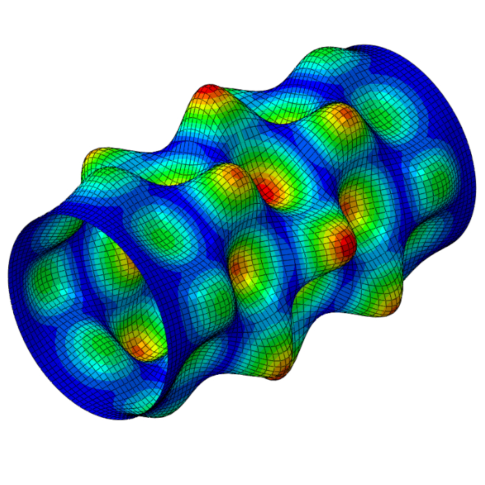
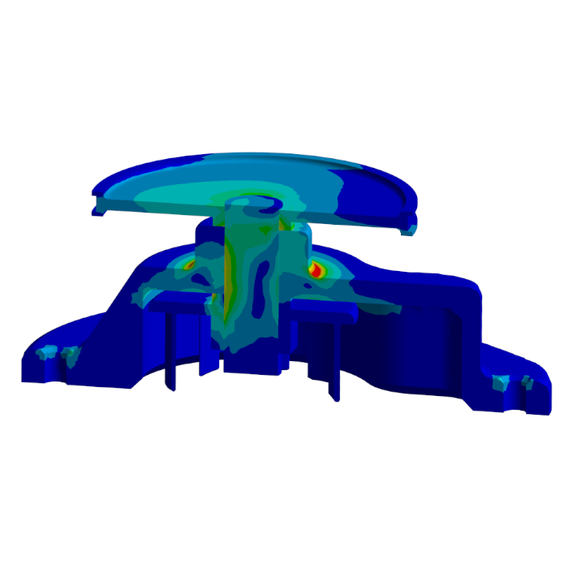
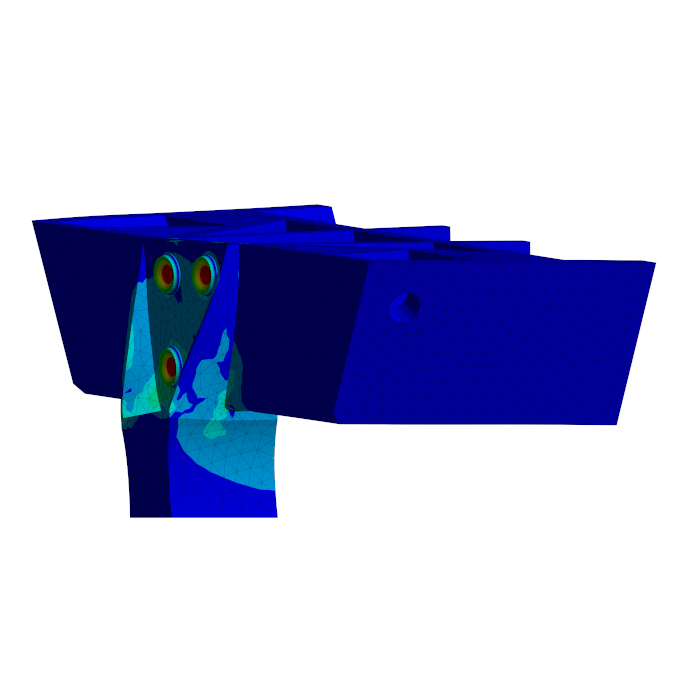
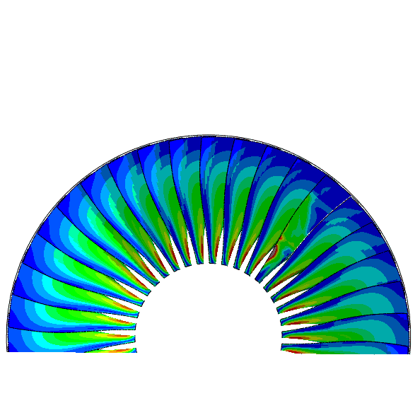
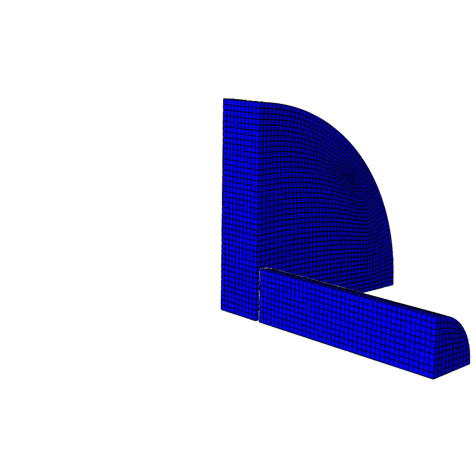
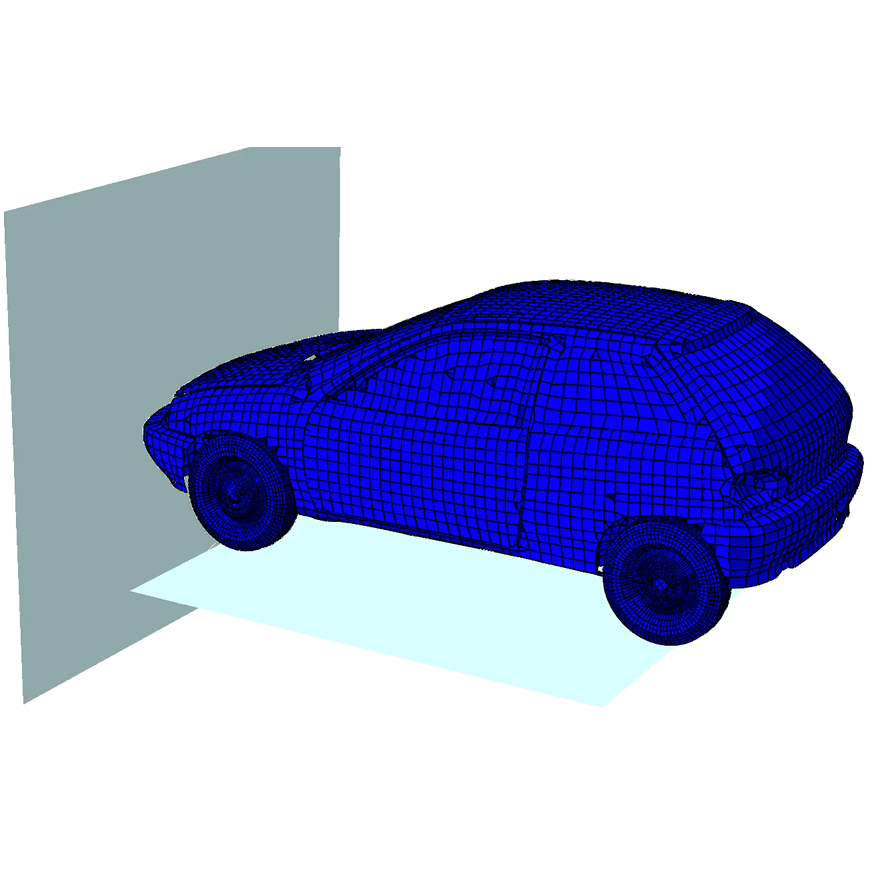

Computer Aided Engineering & Finite Element Methods
Through a series of case studies and computer labs, I got a lot of hands-on practice with nonlinear finite element analysis, mostly in Abaqus but also Ansys. Much of this centered on material modeling: implementing rate- and temperature-dependent plasticity (Johnson-Cook, Swift-Voce) and anisotropic yield surfaces (Hill'48) through custom Fortran user subroutines, plus ductile damage and fracture models (Hosford-Coulomb) calibrated against experimental fracture data and used to simulate crack initiation and element erosion. One project I particularly liked was a group study on a turbofan blade-out event: simulating the high-velocity impact of a detached fan blade on its containment shroud and comparing aluminum, CFRP, and hybrid layups with Hashin composite damage; my part was the material modeling and optimizing the thickness of the full-aluminum shroud design with an automated script run on the ETH Euler HPC cluster. Other work covered the buckling and post-buckling response of thin-walled CFRP struts, combining linear eigenvalue buckling with Riks arc-length analysis to capture imperfection sensitivity and snap-through, frictional contact formulations for bolted joints, mesh convergence studies and verification against analytical solutions, and large-deformation explicit simulations including vehicle crashworthiness, crash-box design, ballistic penetration, and Taylor impact tests.





